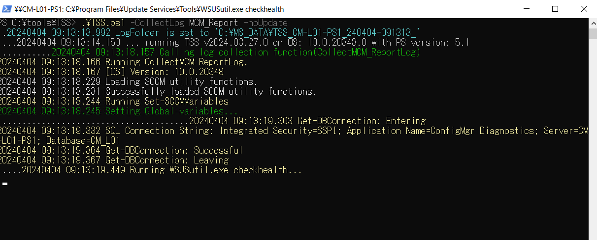
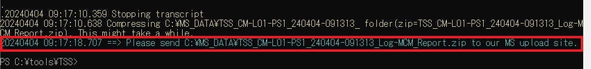
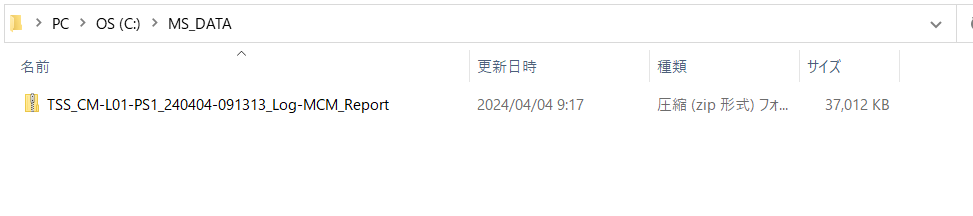

Procedures for Collecting Logs Required for the Initial Investigation of Configuration Manager and WSUS (TSS Version)
This document explains how to use TSS to collect the logs necessary for troubleshooting Configuration Manager (ConfigMgr) and WSUS.
Steps to Run TSS
Download TSS.zip from the following URL:
Extract it to an appropriate location.
Launch PowerShell as an administrator.
Change the PowerShell execution policy to allow running scripts:
1 | Set-ExecutionPolicy Unrestricted -Scope Process |
- Navigate to the folder where you extracted TSS.zip:
1 | cd [TSS path] |
Run the following command to begin log collection:
1
.\TSS.ps1 -CollectLog MCM_Report -noUpdate

- When the EULA appears, please read and accept it.

- By default, logs are saved to C:\MS_DATA. If you wish to change the folder, specify -LogFolderPath as shown below:
1
.\TSS.ps1 -CollectLog MCM_Report -noUpdate -LogFolderPath D:\MS_DATA
- When the EULA appears, please read and accept it.
When you see the dialog “==> Please send C:\MS_DATA\～ to our MS upload site”, log collection is complete.

Upload the logs C:\MS_DATA\TSS_[hostname]_YYMMdd-HHmmss_Log-MCM_Report.log
